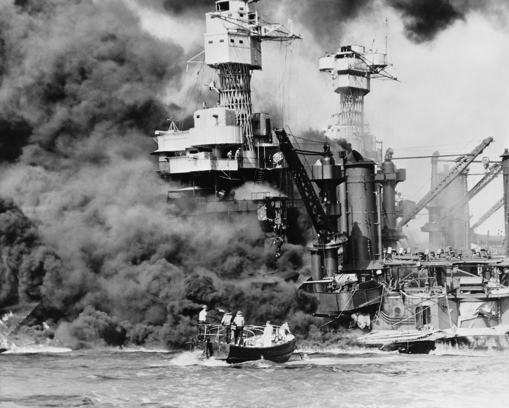

Was the United States Justified in Dropping the Atomic Bomb?
Justified definition: having a good or legitimate reason.
Introduction
World War II began in Europe in 1939. However, the United States did not officially enter the war until December 8, 1941. After the incredible destruction and lose of life cuased by World Word I, the United States entered a period of isolationism (staying out of the affairs of other countries). Americans felt far removed from the conflicts in Europe and the rest of the world. This all changed on December 7, 1941 when Japan attacked the Pearl Harbor Naval Base in Hawaii, killing more than 2,300 Americans. The United States entered the war by declaring war on Japan the next day. What came next was a series of bloody battles fought on various islands in the Pacific Ocean and southeast Asia. The Japanese eventually surrendered after the US dropped two atomic bombs on the Japanese cities Nagasaki and Hiroshima in August, 1945. It is estimated that up to 250,000 Japanese were killed by the two bombs.
Objective
Your objective will be to answer the following question:
Was the United States justified in dropping the atomic bombs on Japan?
You will review documents, websites, and videos to come up with your thesis (claim) and use evidence from those sources to support it.
You will write your response using this graphic organizer. Be sure to review the rubric on the last page. You can use this graphic organizer to help list reasons for and against dropping the bombs.
Sources
Attack on Pearl Harbor Video
War in the Pacific - Ducksters
War in the Pacific - National Geographic
A brief history of the Atomic Bomb Video
Hiroshima Survivors Newsela Article
Viewpoints on the Atom Bomb Google Slide

{kind=link}

{kind=link}